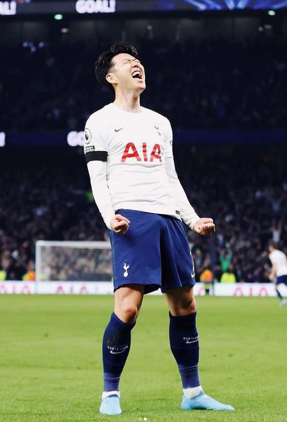

손흥민
 대한민국 국적의 토트넘 홋스퍼 FC 소속 축구선수. 주 포지션은 윙어[32]이며, 현재 대한민국 축구 국가대표팀 주장을 맡고 있다.프리미어 리그와 UEFA 챔피언스 리그 아시아 선수 역대 최다 득점자이자 최초로 발롱도르 후보 30인[33]과 FIFA FIFPro 월드 XI 후보 55인[34]에 선정됐다. 또한 FIFA 푸스카스상을 수상[35]했으며, 프리미어 리그 이달의 선수에 3회 선정되었고, 아시아 선수 최초로 PFA 올해의 팀 선정[36] 및 프리미어 리그 득점왕을 수상했다.